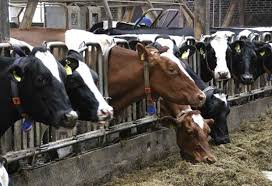

Activities
Animals life and thier Natural Habits
Visiting animals on a farm offers a unique and enriching experience,
allowing you to observe their daily lives in a setting that mirrors
a natural, sustainable environment. Farms provide an opportunity to
see animals like cows, goats, sheep, chickens, and ducks in their
element—grazing on open pastures, resting under shady trees, or
engaging in natural behaviors like scratching the ground or tending
to their young. You can learn about how they contribute to the
ecosystem, such as chickens keeping pests in check or cows enriching
the soil with their grazing patterns. Many farms prioritize ethical
practices, giving animals ample space and care, ensuring their
well-being while fostering a deeper connection with the land.
This experience not only educates visitors about the vital
relationship between humans and animals but also instills a
sense of respect for the effort that goes into sustainable
farming practices and the role of animals in our lives.

play with farm tools, such as a pitch fork or shovel
Playing with farm tools like a pitchfork or shovel can be both
educational and entertaining, especially for kids and beginners
exploring farm life. These tools, often seen as symbols of hard
work and self-reliance, allow individuals to engage with the soil
and understand its texture and properties. Whether digging, turning
compost, or practicing how to plant seeds, using a shovel develops
coordination and strength. Similarly, handling a pitchfork can be a
fun way to learn about hay or compost management, fostering a
connection to traditional farming practices. However, it’s essential
to handle these tools carefully, ensuring proper supervision and safety
precautions to prevent accidents while enjoying the experience.
pick your own produce from the garden to take home with you!
Picking your own produce from the garden is a delightful experience that
connects you with nature and the source of your food. The thrill of selecting
fresh, ripe fruits, vegetables, or herbs straight from the plants brings a sense
of accomplishment and joy. Whether it's plucking juicy tomatoes, crisp lettuce,
or fragrant basil, the process is both rewarding and educational, teaching about
seasonality and the effort behind growing food. This hands-on activity not only
ensures the freshest produce for your meals but also promotes sustainable living.
Taking your harvest home allows you to enjoy the flavors of truly fresh ingredients,
elevating your cooking while creating cherished memories of the garden.